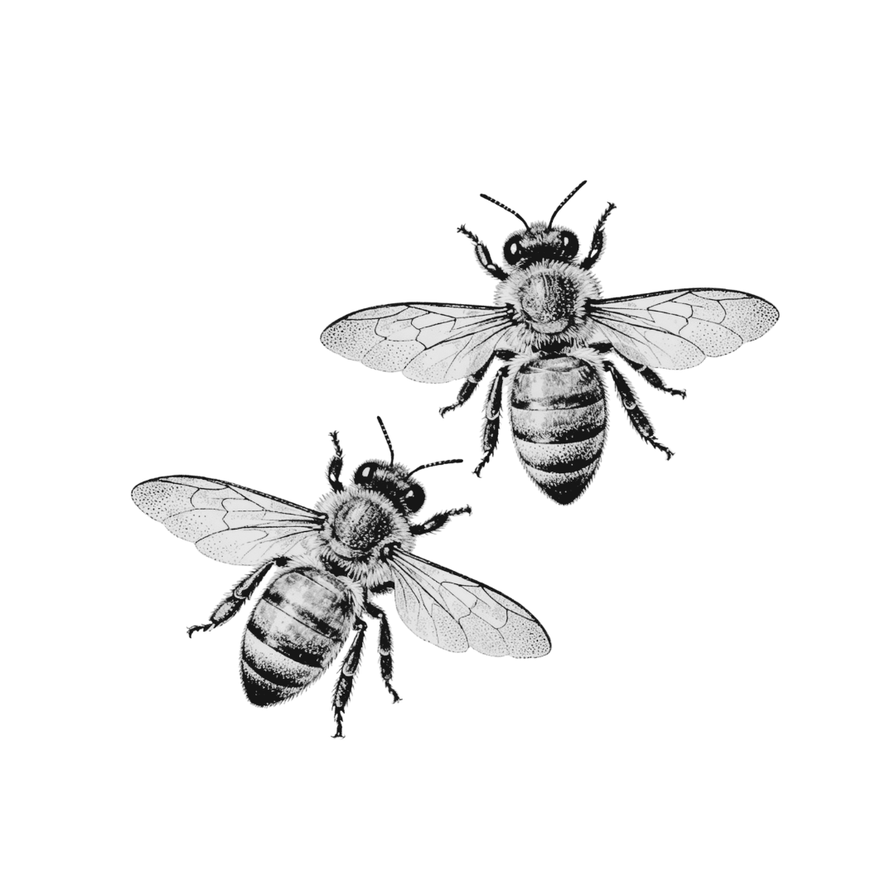

Team Coaching
that Supports Collaboration
Our team coaching services support groups to work together with greater clarity and effectiveness.
Book a callTeam coaching is a structured partnership with a team over time — with the team itself as the client.
Rather than focusing on individual performance, it strengthens how the group works together. Team coaching is valuable when teams feel stuck in familiar dynamics.
- A discovery phase to understand team strengths and challenges
- Co-created vision and agreements for the coaching journey
- Space for difficult conversations and skill-building
- Typical engagement: six to eight 90-minute sessions

Organizations that invest in team coaching see higher employee engagement and retention rates.
Companies that integrate coaching into leadership development see a dramatic improvement in team effectiveness and culture.
Research from the International Coaching Federation (ICF)
Team coaching makes sense when the team, not just the leader, is the unit of change.
It's the right next step when capable, committed teams feel stuck in recurring dynamics, when communication, trust, or accountability issues keep resurfacing, or when progress depends on how well people collaborate across the whole group.
If the question you're asking is "How can we work better together?" team coaching is likely the right place to start.
Two coaches for two teammates.
2:2 coaching supports pairs — co-directors, teammates, collaborators, or manager and employee — and focuses on the relationship. Together, we work toward understanding, addressing communication friction, and co-creating healthy working agreements.
What you can expect:
- Real-time feedback and facilitation from both coaches
- Clear alignment around shared goals and expectations
- Growth in emotional intelligence and mutual accountability
- Typical engagement: eight to twelve 90-minute sessions over 6 months
2:2 coaching is designed for pairs whose relationship shapes the health of the broader team.
It's especially valuable when tension, misalignment, or unspoken conflict between two people is affecting decision-making, morale, or team dynamics. By working directly with the relationship, 2:2 coaching strengthens both individuals and the system around them.
If the question you're holding is "How do we repair or strengthen this relationship so the team can thrive?" 2:2 coaching may be the right next step.
Team coaching happens in the context of real work.
We pause conversations, name patterns, and invite in-the-moment experiments. Over time, teams build the capacity to notice and adjust themselves.
In team coaching, we focus on patterns of interaction:
- How decisions are made
- How tension shows up
- Who speaks and who holds back
- How responsibility is shared
Team coaching isn't:
- Individual coaching done in a group
- Therapy or conflict mediation
- A one-time workshop or offsite
- A substitute for the team's own ownership
Team coaching in practice.

Let's figure out the right next step.
Book a chemistry call, or take our Healthy Leadership Survey to find out which service would best support you right now.